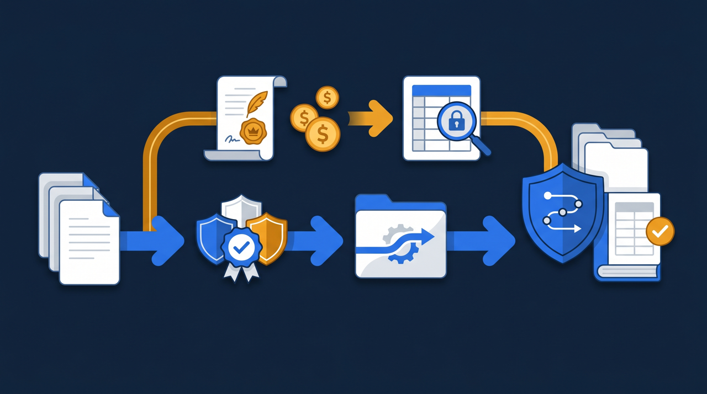
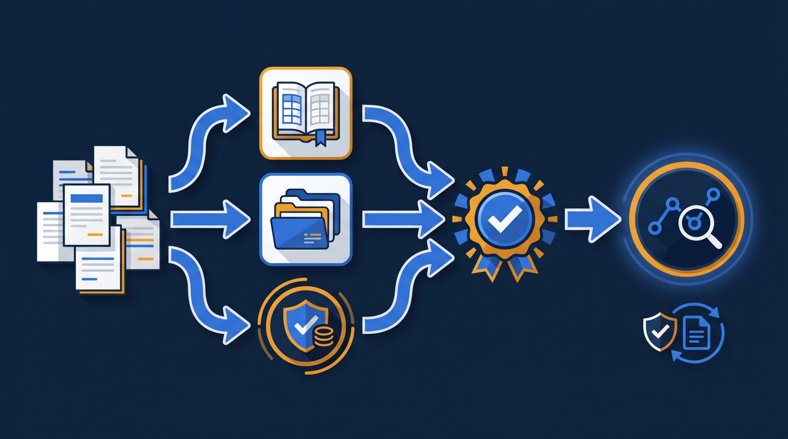
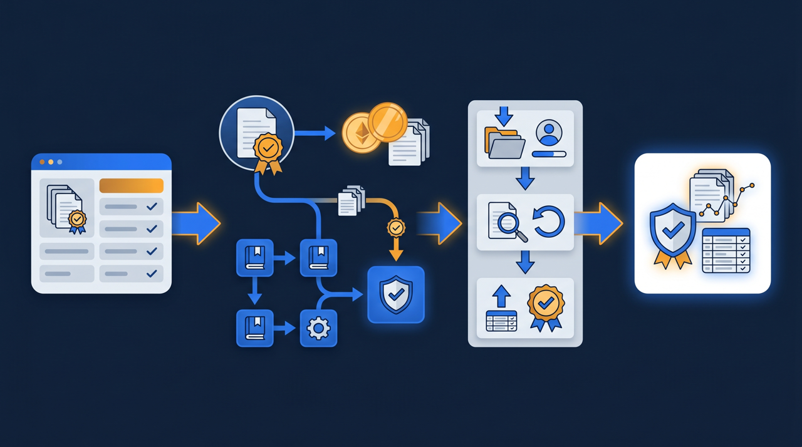

「研修にお金がかかるのは分かっているけれど、なるべく負担を抑えたい」——そう考える経営者や人事担当者にとって、人材開発支援助成金は気になる制度ですよね。しかも、近年はeラーニングや動画研修も活用の対象になり得ます。この記事では、人材開発支援助成金の基本と、研修プラットフォームの導入とどう組み合わせられるのかを、実務目線で整理します。なお、制度の細かな要件や金額は変わることがあるため、活用にあたっては最新の公募要領や厚生労働省の案内をご確認ください。

人材開発支援助成金とは？まず基本を整理する
人材開発支援助成金は、事業主が従業員に対して、職務に関連した知識や技能を習得させる訓練を行った場合に、その訓練にかかった経費や、訓練期間中に支払った賃金の一部を国が助成する制度です。厚生労働省が所管していて、人を育てる企業の取り組みを後押しすることを目的としています。
この助成金は、一つの制度というより、いくつかのコースに分かれた制度の集まりだと捉えると整理しやすいです。コースによって、対象となる訓練の種類や、助成の内容が異なります。たとえば、職務に必要な知識を学ばせる一般的な訓練を対象とするもの、特定の分野の人材育成を後押しするものなど、目的に応じた区分が設けられています。どのコースが自社の研修に合うかは、行おうとしている訓練の中身によって変わってくるわけです。
ところで、なぜ国がこうした助成を行うのでしょうか。背景には、人を育てる投資が企業の競争力につながり、ひいては経済全体の底上げになる、という考え方があります。厚生労働省の能力開発基本調査を見ても、人材育成に取り組む企業は多い一方で、費用や時間が課題になっている実態がうかがえます。その負担を和らげることで、教育に踏み出しやすくする。それがこの制度の役割と言えます。
とくに中小企業では、「研修にお金をかけたいけれど、すぐに売上に結びつくわけではないので踏み出しづらい」という声をよく聞きます。人を育てる効果は、すぐには数字に表れにくいものですよね。だからこそ、目先の費用が重く感じられ、後回しになりがちです。助成金は、その最初の一歩のハードルを下げる役割を担っています。すべての費用が戻ってくるわけではありませんが、負担の一部が和らぐだけでも、教育に取り組むかどうかの判断は変わってきます。制度を知っているかどうかで、踏み出せる範囲が変わってくる、というのが実情なんですよね。
eラーニング・動画研修は対象になるのか
ここで多くの方が気になるのが、「集合研修だけでなく、eラーニングや動画研修も対象になるのか」という点ですよね。
結論から言うと、コースや訓練の内容によっては、eラーニングや動画による訓練も対象となる場合があります。働き方が多様になり、オンラインでの学習が広がる中で、こうした形態の訓練を後押しする方向の見直しも進められてきました。現場を離れずにすきま時間で学べるeラーニングは、中小企業にとって取り組みやすい訓練の形でもあります。
ただし、ここは慎重に確認すべき点です。対象となる訓練の形態や、必要な訓練時間、内容には要件が定められていて、その要件はコースや年度によって異なることがあります。「eラーニングなら何でも対象になる」と考えるのは早計で、自社が行おうとしている訓練が要件に当てはまるかどうかは、その時点の公募要領で一つずつ確認する必要があります。要件は改正されることがあるため、過去の情報や伝聞ではなく、最新の厚生労働省の案内をもとに判断することが欠かせません。

助成の内容と申請の流れ
助成金がどういう形でもらえるのか、そしてどう申請するのかを整理しておきます。
何が助成されるのか
人材開発支援助成金で助成される対象は、大きく分けて2つの考え方があります。一つは、訓練にかかった経費の一部。教材費や受講料、外部講師への委託費といった、訓練そのものにかかったお金が対象になり得ます。もう一つは、訓練期間中に従業員へ支払った賃金の一部。業務時間内に訓練を受けさせた場合、その時間分の賃金が対象になることがあります。
助成率や上限額は、コース、企業の規模、訓練の内容によって異なり、制度改正で変わることもあります。一般的に、中小企業のほうが助成率が高く設定されている傾向がありますが、具体的な数値はここで断定せず、最新の公募要領や厚生労働省の案内でご確認ください。金額の見込みは、申請を検討する段階で最新の資料に当たることをおすすめします。
申請の流れ
申請は、一般的に次のような流れになることが多い傾向があります。まず、訓練を始める前に訓練計画を作成し、所管の労働局へ提出します。次に、計画に沿って訓練を実施します。そして、訓練を実施したことを示す書類とともに、支給申請を行う。この「事前に計画を出す」という点が、見落とされやすいポイントです。訓練を始めてしまってから申請しようとしても、計画の事前提出が要件になっているコースでは間に合わないことがあります。
必要な書類や提出のタイミングは、コースによって異なります。受講記録、賃金台帳、訓練の内容を示す資料など、求められるものはさまざまです。所管する労働局やハローワークの案内に沿って、一つずつ準備を進めることが大切です。手続きに不安がある場合は、社会保険労務士など助成金に詳しい専門家に相談する方法もあります。
申請の準備で多くの会社がつまずきやすいのが、書類の整合性です。訓練計画に書いた内容と、実際に行った訓練の記録、そして賃金の記録が、互いに食い違っていないことが求められる傾向があります。たとえば、計画では「この時間にこの訓練を行う」としていたのに、実際の受講記録とずれていると、確認に時間がかかることがあります。だからこそ、訓練の記録は、後から整理し直すのではなく、実施しながら正確に残していくことが大切なんですよね。受講した日時や時間が自動で記録される仕組みを使っていれば、こうした整合性の確認もしやすくなります。手作業で記録していると、転記の際のずれや記録漏れが起きやすく、後の確認作業が重くなりがちです。
研修プラットフォーム導入での活用例
ここからは、eラーニングや動画研修の仕組み——研修プラットフォーム（学習管理システム、LMS）の導入と、この助成金をどう組み合わせられるのかを、想定例で考えてみます。なお、ここで示すのは一般的な考え方であり、実際に対象となるかは要件次第である点をあらためて申し添えます。
たとえば、ある中小企業が、新人向けの基礎研修や安全教育を動画化し、LMSに載せて全社員に受講させる取り組みを始めたとします。この訓練が助成金の要件に当てはまる場合、教材の制作や受講にかかった費用、訓練を受けた時間分の賃金の一部が、助成の対象になり得ます。研修の仕組みづくりにかかる初期の負担を、制度の活用で和らげられる可能性があるわけです。
ここで効いてくるのが、受講記録の残り方です。助成金の申請では、「誰が、いつ、どの訓練を、どれだけ受けたか」を示す記録が求められることが多い傾向があります。紙の出欠表や手集計だと、記録の抜けや転記ミスが心配になりますよね。LMSを使うと、受講日時、視聴時間、確認テストの結果などが自動で記録されるため、実施を示す書類を整理しやすくなります。助成金の活用を視野に入れるなら、こうした記録がきちんと残る仕組みかどうかを、研修プラットフォーム選びの基準の一つに加えておくとよいでしょう。
つまり、研修を仕組み化することと、助成金を活用することは、別々の話ではなく、つながっているんです。教育を仕組みに変える過程で生まれる受講記録が、そのまま制度活用の土台になる。この相乗効果を意識すると、研修への投資をより前向きに検討しやすくなります。

どんな会社が活用を検討しやすいか
人材開発支援助成金は、特定の業種だけのものではありません。職務に関連した訓練を従業員に行う事業主であれば、幅広く検討の対象になり得ます。そのうえで、とくに活用を考えやすいのはどんな場面か、いくつか挙げてみます。
一つは、これから研修の仕組みを整えようとしている会社です。新人教育や安全教育を、口頭のOJT中心から、動画やeラーニングを使った仕組みへ移そうとしている。こうした「これから投資する」タイミングは、助成金の活用を組み込みやすい場面です。研修の計画を立てる段階で制度の活用を視野に入れておけば、事前の手続きにも間に合わせやすくなります。
もう一つは、繰り返しの研修が多く、教育にかかる費用や時間が課題になっている会社です。毎年・毎月のように同じ研修を行っているなら、その内容を教材化する取り組みが、助成の要件に当てはまる場合があります。研修を仕組みに変える費用の負担を、制度で和らげられる可能性があるわけです。
ただし、繰り返しになりますが、どのケースでも対象になるかは要件次第です。「うちは対象になりそうだ」と感じたら、思い込みで進めるのではなく、その時点の公募要領を確認し、労働局や専門家に問い合わせて、自社の計画が要件に合うかを一つずつ確かめることが大切です。可能性があるなら、まず確認してみる。その一歩が、教育への投資を後押ししてくれることがあります。
活用するときに気をつけたいこと
最後に、人材開発支援助成金を活用するうえで、押さえておきたい点を整理します。
まず、制度の要件は変わることを前提にすること。助成金の制度は、年度ごとや改正のたびに、対象や金額、手続きが見直されることがあります。「去年はこうだった」「知り合いの会社ではこうだった」という情報をそのまま当てにすると、要件に合わずに申請できない、ということが起こり得ます。検討する時点での最新の公募要領を、自分で確認することが基本になります。
次に、訓練を始める前に確認・準備をすること。多くのコースでは、訓練計画の事前提出が求められます。研修を進めてから「助成金を使えないか」と考え始めると、事前手続きの要件を満たせず、対象外になってしまうことがあります。研修の計画段階で、助成金の活用を視野に入れて準備を進めると、選択肢を広く保てます。
そして、判断に迷ったら公的窓口や専門家に相談すること。制度の所管は厚生労働省、申請の窓口は各都道府県の労働局やハローワークです。要件の確認はこれらの窓口に問い合わせるほか、社会保険労務士など助成金に詳しい専門家に相談する方法もあります。自己判断で進めて要件を取り違えるより、確実な情報をもとに進めるほうが、結果的に近道になることが多いわけです。
まとめ：研修の仕組み化と助成金活用をつなげる
人材開発支援助成金は、従業員への訓練にかかった経費や賃金の一部を国が助成する制度です。コースや内容によっては、eラーニングや動画研修も活用の対象になり得ます。教育に踏み出す際の費用負担を和らげる、心強い制度と言えます。
ただし、対象となる訓練の要件、助成率や上限額、申請の手続きは、コースや年度によって異なり、改正で変わることもあります。この記事では具体的な数値を断定せず、考え方の整理にとどめました。実際に活用を検討する際は、最新の公募要領や厚生労働省の案内を確認し、必要に応じて労働局や専門家に相談しながら進めてください。
研修プラットフォームを導入して教育を仕組み化することと、助成金を活用することは、受講記録という形でつながっています。教育を仕組みに変える取り組みが、そのまま制度活用の土台になる。この視点を持って、自社の人材育成と費用面の両方から、無理のない進め方を検討してみてはいかがでしょうか。
よくある質問
事業主が従業員に対して職務に関連した知識・技能を習得させる訓練を行った場合に、訓練にかかった経費や、訓練期間中の賃金の一部を国が助成する制度です。厚生労働省が所管しています。複数のコースに分かれており、対象となる訓練や助成の内容はコースによって異なります。
コースや訓練の内容によっては、eラーニングや動画による訓練も対象となる場合があります。ただし、対象となる訓練の形態や時間、内容には要件が定められており、要件はコースや年度によって異なることがあります。活用を検討する際は、最新の公募要領や厚生労働省の案内を確認することが欠かせません。
助成率や上限額は、コース・企業規模・訓練の内容によって異なり、制度改正で変わることもあります。中小企業のほうが助成率が高く設定されている傾向がありますが、具体的な数値は最新の公募要領や厚生労働省の案内で確認する必要があります。この記事で特定の数値を断定することは避けています。
一般的に、訓練を始める前に訓練計画を作成して労働局へ提出し、訓練を実施したうえで、実施したことを示す書類とともに支給申請を行う、という流れが多い傾向があります。必要な書類や提出のタイミングはコースによって異なるため、所管する労働局やハローワークの案内に沿って進めることが大切です。
誰が、いつ、どの訓練を、どれだけ受けたかを示す記録が求められることが多い傾向があります。学習管理システム（LMS）を使うと、受講日時・視聴時間・確認テストの結果などが自動で記録されるため、実施を示す書類を整理しやすくなります。記録の残し方も、活用を見据えるなら確認しておきたい点です。
制度の所管は厚生労働省で、申請の窓口は各都道府県の労働局やハローワークになります。要件の確認や申請の準備は、これらの公的窓口に問い合わせるほか、社会保険労務士など助成金に詳しい専門家に相談する方法もあります。制度は変わることがあるため、最新の情報をもとに進めることをおすすめします。